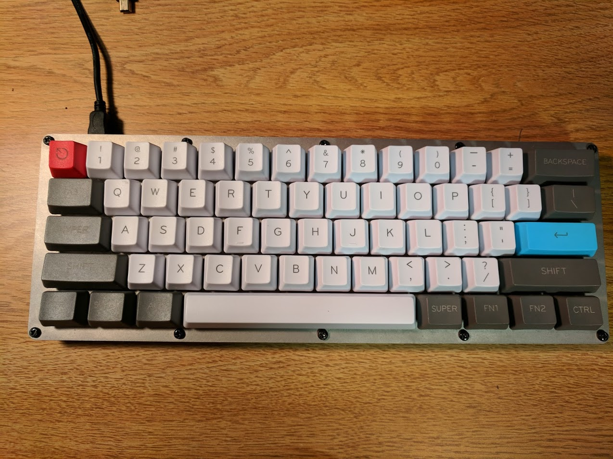
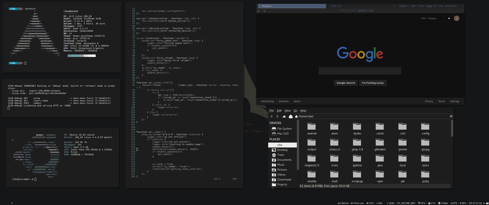
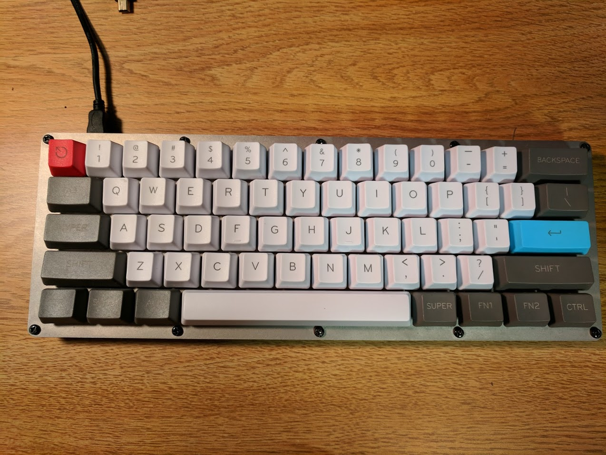
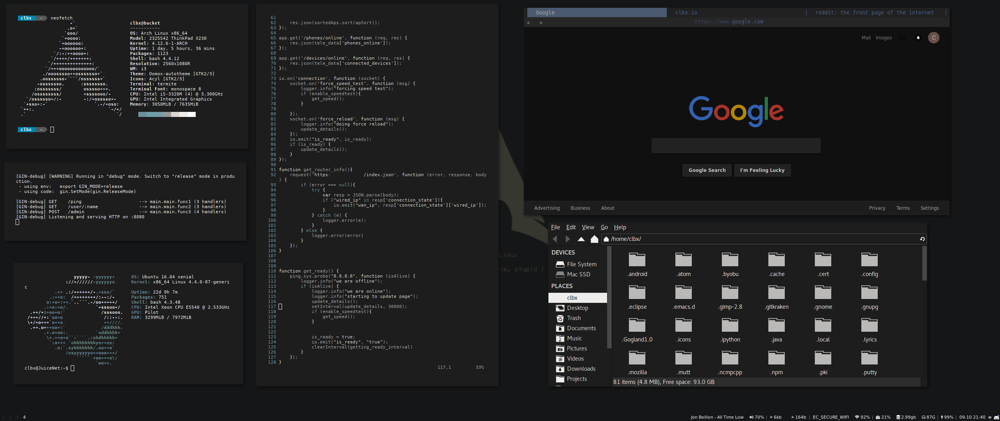

Im Clay. This website isnt much else than just me messing around with some simple css and whatnot. I guess it's also about me

You can find me basically everywhere with this as some kind of profile picture, I liked Android N if you can't tell
I'm an American college student, studying Computer Science and Computer Engineering. I obviously like computers, I have 3 main machines, The Juice Pouch, the Juice Box, and the Juice Net.
I really enjoy working on the Pouch and the Net, whenever I can, tweaking and ricing my Linux install is one of my favorite things to do. Sometimes I'll hop over to my Windows box and play some games, some of my favorites are Titanfall 2, Fallout (All of them), Civilization, Gunpoint, and Enter the Gungeon. I'm also usually on reddit, and enjoy the /r/android, /r/thinkpads, /r/mechanicalkeyboards and /r/unixporn communities. All of those communites really have something I like
My phone is a Pixel XL so obviously I'm pretty into Android, I love the google made phones and will never switch, Android works for me so well and I'm very ingrained into the google ecosystem. After having fully Vanilla Android, I can't really go back, I love everything about the Pixel and it's a great successor to the Nexus 6P I had before it.
My main machine for basically everything I do is a Thinkpad X230, which in my opinion is one of the best laptops every made, it's solid and works very well and it's why I'm using a laptop from 2012. When Im at home, I sit it on a dock connected to my speakers, keyboard, mouse and a nice 29" Ultrawide Monitor that works wonderfully with the UI.
I'm also a big mechanical keyboard enthusiast, I'm currently using a custom built 60% board based off the GH60 Satan PCB with Fosen Aquamarine switches, it's a great little board, though my next build will probably be something slightly bigger. I really want to get my hands on a set of Godspeed Keycaps, so if anyone has some and wants to hook me up that'd be great.

The Keyboard
/r/Unixporn has a special place in my heart. It's a subreddit devoted to people showing off awesome looking Linux installs, I love messing with and customizing basically anything I can, and Linux has been a fun time for me. I'm using i3wm with a darker theme, in Linux everything is customizeable and I like it like that.

Screenshot of an example of my setup. More can be seen on Github.
You can find me basically everywhere with this as some kind of profile picture, I liked Android N if you can't tell
I'm an American college student, studying Computer Science and Computer Engineering. I obviously like computers, I have 3 main machines, The Juice Pouch, the Juice Box, and the Juice Net.
| Juice Pouch | Juice Box | Juice Net |
|---|---|---|
| Lenovo X230 | Self Built | HP DL180 G6 |
| Arch Linux + MacOS Sierra | Windows 10 | Ubuntu Server |
| i5-3320M 2x2.60 Ghz | i5-6500 4x3.60 Ghz | 2x Xeon E5540 8x2.53 Ghz |
| HD 4000 | RX480 | nope |
| 8GB DDR3L | 8GB DDR4 | 16GB DDR3 ECC |
| 128GB + 256GB SSD | 512GB SSD + 4TB HDD | 2x 2TB HDD |
| Everything | Gaming | Server |
I really enjoy working on the Pouch and the Net, whenever I can, tweaking and ricing my Linux install is one of my favorite things to do. Sometimes I'll hop over to my Windows box and play some games, some of my favorites are Titanfall 2, Fallout (All of them), Civilization, Gunpoint, and Enter the Gungeon. I'm also usually on reddit, and enjoy the /r/android, /r/thinkpads, /r/mechanicalkeyboards and /r/unixporn communities. All of those communites really have something I like
My phone is a Pixel XL so obviously I'm pretty into Android, I love the google made phones and will never switch, Android works for me so well and I'm very ingrained into the google ecosystem. After having fully Vanilla Android, I can't really go back, I love everything about the Pixel and it's a great successor to the Nexus 6P I had before it.
My main machine for basically everything I do is a Thinkpad X230, which in my opinion is one of the best laptops every made, it's solid and works very well and it's why I'm using a laptop from 2012. When Im at home, I sit it on a dock connected to my speakers, keyboard, mouse and a nice 29" Ultrawide Monitor that works wonderfully with the UI.
I'm also a big mechanical keyboard enthusiast, I'm currently using a custom built 60% board based off the GH60 Satan PCB with Fosen Aquamarine switches, it's a great little board, though my next build will probably be something slightly bigger. I really want to get my hands on a set of Godspeed Keycaps, so if anyone has some and wants to hook me up that'd be great.

The Keyboard
/r/Unixporn has a special place in my heart. It's a subreddit devoted to people showing off awesome looking Linux installs, I love messing with and customizing basically anything I can, and Linux has been a fun time for me. I'm using i3wm with a darker theme, in Linux everything is customizeable and I like it like that.

Screenshot of an example of my setup. More can be seen on Github.